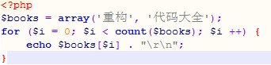

Created by 周昌炬
2017.03.21
编程语言，从定义来看，其实就是一种语言，是你和机器沟通的文字。
写代码就像写作文，文字功底的优劣，直接会影响你最终成文的质量。
BookList
Books
add & insert
get & fetch
bbd
cfxf
chargeapp
clxg
financier
freebf
obt
......
Stock
StockFilter
Mail
MailParser
delete
deleteTitle
getBody
方法的动词+类的名词，结合起来就是这个方法最终的目的；
而方法的动词短语，一般都是操作这个类的某个属性，短语中的名词就是属性名
isTradeDay
hasOwnProperty
isValid
found
done
td => tradeDay
sn => stockName
i

how => inputRecord
what => employeeName
how => sum
what => totalEmployeeNumber
biz => business
设计模式
1.认证中心要将认证方式从传统的account+password改为userid+sessionid方式，我们大约有100个功能用到了该认证
2.我们有10个产品用到了股票分时图，产品要求将分时图的颜色修改下
3.我们有大约40台服务器上的应用用到了200.58这台行情服务器，今天行情同事反馈这台服务器挂了，应用方需要将所有用到该服务器的地方，都切换到200.5这台临时服务器
4.加班问题
1.难以理解
2.设计上可能存在不合理的地方，有些内容已经超出这个类的范畴了，你很难把控(代码失控)
3.复用性差
4.不利于维护
遵循单一职责，一个方法只处理一件事情
这世上有两件事情不能相信：
一件是产品经理的需求不会变
另外一件是其他部门提供的接口很稳定
沪港通/问财项目的案例
http://172.20.1.247/train/history/exportExcel/1 and sleep(10)/
select * from history where id=1 and sleep(10)
1.可以让你在初期理清思路
2.先完成接口，这个时候发现问题，重构成本是很低的
3.这里的接口，不局限于程序中的interface
电脑的USB接口
Zend_Db_Adapter
模板技术
OCP在多人分工合作的场景，意义非常大。
① 快速新增一个测试
② 运行所有的测试（有时候只需要运行一个或一部分），发现新增的测试不能通过
③ 做一些小小的改动，尽快地让测试程序可运行，为此可以在程序中使用一些不合情理的方法
④ 运行所有的测试，并且全部通过
⑤ 重构代码，以消除重复设计，优化设计结构
简单来说，就是不可运行/可运行/重构——这正是测试驱动开发的口号。
盖房子的时候，工人师傅砌墙，会先用桩子拉上线，以使砖能够垒的笔直，因为垒砖的时候都是以这根线为基准的。TDD就像这样，先写测试代码，就像工人师傅先用桩子拉上线，然后编码的时候以此为基准，只编写符合这个测试的功能代码。 而一个新手或菜鸟级的小师傅，却可能不知道拉线，而是直接把砖往上垒，垒了一些之后再看是否笔直，这时候可能会用一根线，量一下砌好的墙是否笔直，如果不直再进行校正，敲敲打打。使用传统的软件开发过程就像这样，我们先编码，编码完成之后才写测试程序，以此检验已写的代码是否正确，如果有错误再一点点修改。